Jason Python Class
Sliding presentation
laurent
Table of Contents
- 1. Our First lesson
- 1.1. Proper set-up before the class
- 1.2. Things Jason likes:
- 1.3. Jason & programming
- 1.4. STORE and PROCESS
- 1.5. Fortunately we have many super heroes that speak ML
- 1.6. Update your big picture!
- 1.7. Spoiled for choice, which super-hero will you pick?
- 1.8. Let’s pick Python as our first language
- 1.9. Update your big picture!
- 1.10. Next class we write hello.py
- 1.11. Update your big picture!
- 2. New Vocabulary
- 3. Data types
- 4. 从Scratch 迈向 python!
- 5. Comments/variables/input
- 6. VLive Share, review and if/elif/else
- 7. Stream, Indentation, statements (simple and compound)
1 Our First lesson
1.1 Proper set-up before the class
- Open your web.wechat window
- open your meet room https://meet.jit.si/jasonchengyu 共享电脑摄像头和麦克风两种方法（1-接受网页自动发放的共享提示 2-登上meet.jit.si后共享资源） 截图
- put your headset and mic on, make sure both are working properly
1.2 Things Jason likes:
- Sausage Man (香肠派对), a battle royale game stylized to the likenings of Fortnite and PUBG (PlayerUnknown’s BattleGrounds ).
- Super Mario Bros
- Drawing
1.3 Jason & programming
- Wants to learn programming in order to write game and make lots of money :)
- After our python introduction in Phuket, Jason went on to learn through 核桃编程 www.hetao101.com
- Through 核桃编程Jason focused mainly on Scratch coding coding ( and that’s good )
For reference, here is the standard progression from hetao101.com

1.4 STORE and PROCESS
1.4.1 Restaurants STORE and PROCESS food.
Restaurants must be able to STORE food & PROCESS/COOK it. A storage space full of food is not a restaurant. A cook and his knives alone is not a restaurant. A skilled cook with access to food storage? Now we are talking!
1.4.2 Computers are machines that STORE information and PROCESS that information
Essentially a computer is a machine that can STORE and PROCESS information. Based on that definition & the things we discussed, please draw a computer
1.4.3 Computers are everywhere!
Ask the adults around you:
- “Dad, do you think that phones are computers? ”
- “Mum, do you think that a TESLA car is a computer?”
- “Teacher is your Huawei’s watch a computer too?”
Try to help them answer the question just like we did during the class.
1.4.4 Computers are powerful… but their Machine Language is too difficult
- They only understand Machine Language (typically binaries, i.e. a bunch of 0 and 1)
- MACHINE LANGUAGE is impractical for HUMANS to learn, MACHINE CODE is not humanly readable!
1.4.5 Update your big picture!
1.5 Fortunately we have many super heroes that speak ML
- Those super-heroes are : C, C#, C++, Java, Python, Java-script etc…
- You can call those super-heroes and invite them onto your computer
- Provided we speak their language we can ask those super-heroes anything!
1.6 Update your big picture!
1.7 Spoiled for choice, which super-hero will you pick?
Which super-hero will you pick to control your computer? Will you pick the fastest (C)? Will you pick the cutest (Scratch)? Will you pic the most popular (Python)? It is not an easy question, and it does depend on your age and experience…
1.8 Let’s pick Python as our first language
- Easy to learn, open-source, powerful and popular across researchers…Python rocks!
- Learning Python basics properly and without rushing will greatly increase your ability to learn the second one (In Mainland China that second language is typically C++)
1.9 Update your big picture!
1.10 Next class we write hello.py
- From that moment on Python will be your main partner
- Your focus will be to:
- learn Python’s grammar and vocabulary
- write correct sentences with clear commands
Next class we will write a simple hello.py to our beloved Python super-hero.
1.11 Update your big picture!
Ok let’s wrap up this lesson review. Please redraw your Big Picture from scratch
2 New Vocabulary
2.1 Vocabulary to include in your BP
根据今天的反馈jason要用房间里的白板画出他脑海里的python big picture (要包含以下几项:
| python 英雄 | computer 电脑 |
| Store 存储 | Process 处理 |
| ML 机器语言 | Jason 编程人员 |
| Envelope 信封 | Letter (信封里的信) |
| StandardInput 标准输入 | python’s left hand |
| python’s right hand | Standard Output 标准输出 |
| Standard Error 标准错误 | print/say(显示) |
| return(返回) |
2.2 从scratch迈向Python?
I can know that Jason has studied some Scratch. Hopefully he is able to take what he learned there into python. Here is a picture that shows the similarities between both languages:
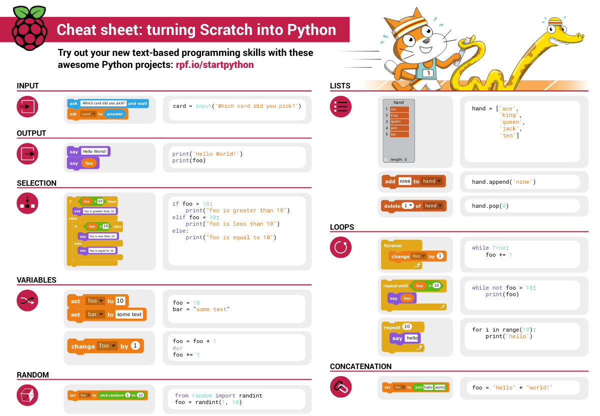
3 Data types
3.1 python data types 数据类别：
Please put the following items within you BP
- boolean
- string (字符串）
- integer整数
- float 浮点数
- list列表
- dictionaries
Attention: 重点在string, integer and float Jason should add his hello.py to his big picture making sure he uses variable declaration. 他要把他的hello.py 也画进去。 hello.py 文件里面不要乱用双引号和括号！
4 从Scratch 迈向 python!
Jason, after our 2nd lesson I asked you and your parents how long and far you had been with Scratch. I think it is worth for you to try and connect what we do with scratch, so I have found some picture that illustrate how both languages do the same thing. I hope it helps.
4.1 input 输入
图左是 Scratch 的表达方式, 图右是 Python 的语法。在 Scratch 中提问的结果会放入「答案」这个变数, Python 可以使用 input() 达> 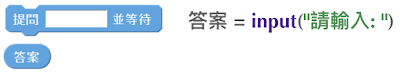
4.2 output 输出
图左是 Scratch 的表达方式, 图右是 Python 的语法。 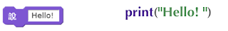
4.3 arithmetic operations 数学运算
图左是 Scratch 的表达方式, 图右是 Python 的语法。 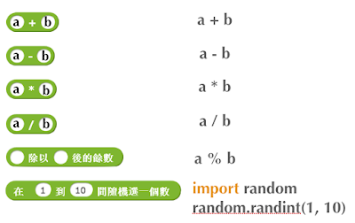
4.4 string operations 字串运算
图左是 Scratch 的表达方式, 图右是 Python 的语法。 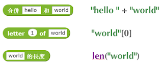
4.5 comparison and logical operations 字串运算
图左是 Scratch 的表达方式, 图右是 Python 的语法。 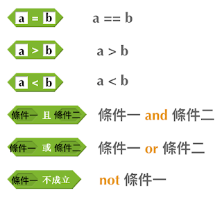
4.6 advanced math 进阶数学运算
图左是 Scratch 的表达方式, 图右是 Python 的语法。 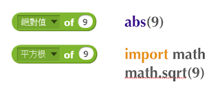
4.7 loop 回圈
图左是 Scratch 的表达方式, 图右是 Python 的语法。 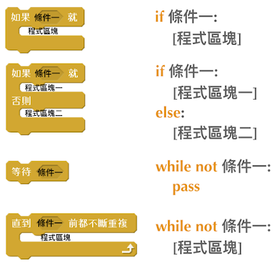
4.8 increment 变数
图左是 Scratch 的表达方式, 图右是 Python 的语法。 Python 可以使用中文「分数」当作变数名称。 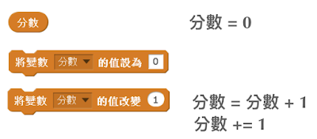
4.9 list 列表
图左是 Scratch 的表达方式, 图右是 Python 的语法。 Python 可以使用中文「清单」当作变数名称。 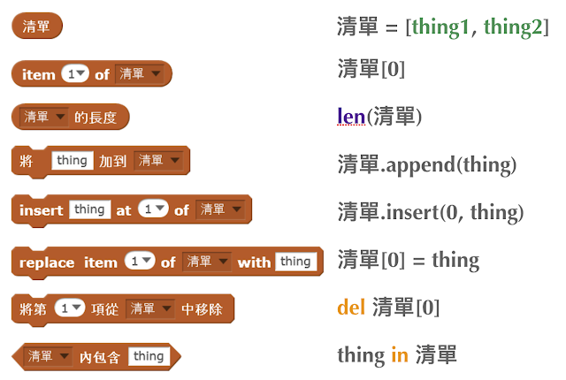
5 Comments/variables/input
5.1 Comments/注释
Comments are section of your code that will not be executed by Python, they are typically there to explain what is happening (useful when you work with others). 确保对模块, 函数, 方法和行内注释使用正确的风格 Python中的注释有单行注释和多行注释. Python中单行注释以 # 开头，例如：
# the following code is a print statement print("Hello World, my name is Jason!")
多行注释如下：
''' The code below is a simple print statement. I am giving python a string of characters, and I ask python to send it (to print it, to display it) onto the standard output (typically the standard output is the screen) ''' print("Hello World, my name is Jason and I am a coder")
5.2 Creating variables
We talked about variables already. I said that variables are like labeled/named boxes that contain data. check the code below, and guess what python will do when it read it line by line:
jason_age = 10 jason_best_friend = "Milo" jason_birth_year = 2020 - jason_age print(jason_age) print(jason_best_friend) print(jason_birth_year)
5.3 Use variables as much as you can
Within the section about comments we asked python to print “Hello World, my name is…”. Although it is correct, each time we can put data in a box and give that box a name we should do it…so let’s do it!
hello = "Hello World, my name is Jason and I am coder". byebye = "It was a pleasure to meet you, see you soon" print(hello) print(byebye)
5.4 Wrap up and homework
Here is the code we looked at during the class. You asked me:
- “why are we using a ‘f’ ?”
- “what is the empty []?”
- “Line 19 and 23 why are we using 2 pairs of parentheses/parens?”
We will solve all those mysteries but for now please read the code below outloud, look at the different colors, and commit line 13,15 and 17 to memory (write those 3 lines 20 times!
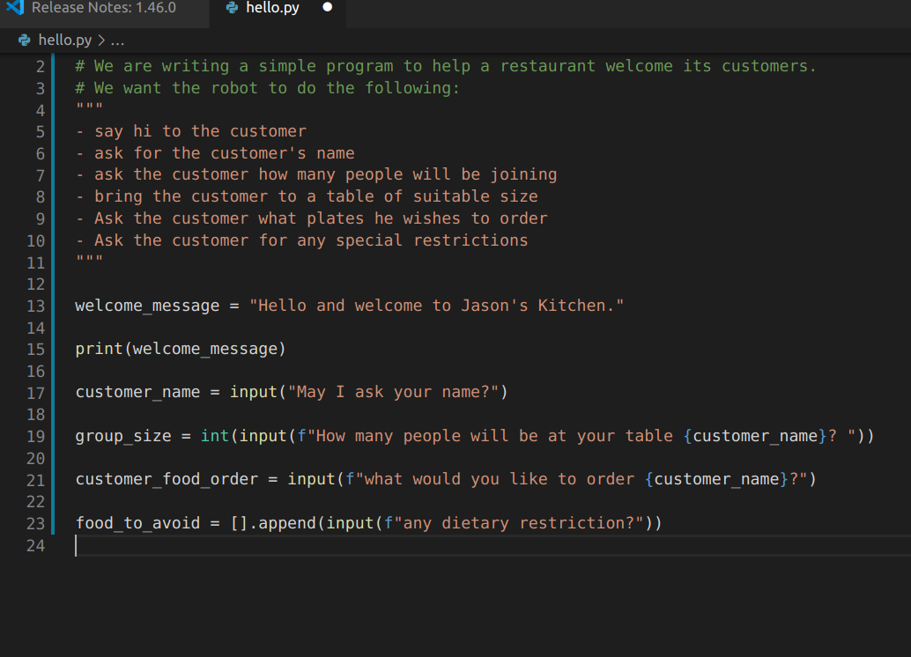
6 VLive Share, review and if/elif/else
6.1 笔记更新
我的笔记以后就放在以下链路：
6.2 Vocabulary review
We reviewed lesson 2:
| python 英雄 | computer 电脑 |
| Store 存储 | Process 处理 |
| ML 机器语言 | Jason 编程人员 |
| Envelope 信封 | Letter (信封里的信) |
| StandardInput 标准输入 | python’s left hand |
| python’s right hand | Standard Output 标准输出 |
| Standard Error 标准错误 | print/say(显示) |
| return(返回) |
Jason you need to be able to draw your BP with all those components in it. Standard Input is the stream that brings instructions to python. Note that data coming from the keyboard, data coming from sensors (传感器)and commands contained in your hello.py file are all reaching the computer through this input stream. Note that whenever you are sending instructions to Python, he will either:
- implement the storage and process commands internally in the computer
- display something to the STDOUT (the screen) if you asked him to
- return something to you if you wrote the relevant return function
- …and if at any point he is unable to perform he will send an error traceback to the Stand Error stream.
6.3 Scratch to Python review
We reviewed and explained how Scratch and Python do the following:
| Scratch | Python | |
|---|---|---|
| ask something from the user | ask & set | input |
| (提问 并等待答案) | ||
| tell something to the user | say | |
| conditional execution | if else | if elif elif else |
| storing data in box | set a to hello | a = “hello” |
| incrementing | change x by 1/ 增加 1 | a = a + 1 |
| add element to a list | add milo to friendlist | friendlist.append(“milo”) |
| delete an element from a list | delete 1 of friendlist | friendlist.pop() |
| loops | ||
| adding/gluing items into a named box | set g to join hi + there | g = “hi” + “there” |
| （合并 hi 和 there |
| a and b are equal | a = b | a == b |
|---|---|---|
| a is greater than b | a > b | a > b |
| a is lesser than | a < b | a < b |
| both 条件1 and 条件2 are satisfied then we act | 条件1 且 条件2 | 条件1 and 条件2 |
| if 条件1 or 条件2 are satisfied then we act | 条件1 或 条件2 | 条件1 or 条件2 |
| if 条件1 is not satisfied then we act | 条件1 不成立的话 | not 条件1 |
| the absolute value of 9 | 绝对值 of 9 | abs(9) |
| square root of 9 | 平方根 of 9 | import math math.sqrt(9) |
| loop 回圈 | ||
| do something 10 times | repeat 10 | for i in range(10) |
| do something once 条件1 is satisfied | 等待条件一 | while not 条件一： pass |
| do something until something happens | repeat until money = 0 | while money > 0 |
| do actiona forever | forever do actiona 重复执行 | while True: actiona |
| if 条件1 is met, then do something | ||
| if 条件1 is true do action 1, otherwise do action2 | ||
| number | ||
|---|---|---|
| we introduce a counter variable and set it to 0 | 分数 | 分数 = 0 |
| set 分数 to 0 | ||
| （将变量 分数 的 值设定为 0） | ||
| we increment our counter by 1 | change 分数 by 1 | 分数 = 分数 + 1 |
| we set the counter to 0 | ||
| list 列表 | ||
| add item to the list | ||
| insert item in the list | ||
| delete item using its rank in the list | ||
| we can check whether an item is in the list | ||
| we can know how many items are in the list | ||
| we can obtain the last item in the list | ||
6.4 if elif else
We spent some time talking about this picture: Let me show you an example where you see if, elif and else applied.
num = 1122 if 9 < num < 99: print("Two digit number") elif 99 < num < 999: print("Three digit number") elif 999 < num < 9999: print("Four digit number") else: print("number is <= 9 or >= 9999")
You can distinguish the following core structure:
if condition_1: block_of_code_1 elif condition_2: block_of_code_2 elif condition_3: block_of_code_3 .. .. .. else: block_of_code_n # # 1. There can be multiple ‘elif’ blocks, however there is only ‘else’ block is allowed. # 2. Out of all these blocks only one block_of_code gets executed. If the condition is true then the code inside ‘if’ # gets executed, if condition is false then the next condition(associated with elif) is evaluated and so on. If none # of the conditions is true then the code inside ‘else’ gets executed.
6.5 实时协作编程安装
- Video-guide to installing Live Share
- Make sure you install python 3 on your computer:
- access your terminal 在系统桌面右上角有一个“放大镜”。点击“放大镜”，在这个对话框内搜索“终端”，点击回车就可以了.
- when in your terminal 请输入python –version后点击回车，照一下。然后请输入python3 –version后点击回车，照一下。 如果python 3 没有安装的话那么根据此中文视频来安装。
7 Stream, Indentation, statements (simple and compound)
7.1 Reference guide for coming Live Share sessions 实时协作编
Note to Laurent: All our Live Share 实时协作编程 meetings will take place here. This link is valid until July 25th. Coach needs to access his Live Share and join a meeting room using his recurring meeting link mentioned above. This in turn will generate a access link that should be sent to the student/interviewer each time.
Note to Jason: You have 2 options to join our Live Share meetings.
OPTION 1: you copy-paste our permanent link inside your Live Share You open your Visual Studio Code, hit the Live Share icon, hover over the “Session details” and click on the green icon as explained in this video: Check this short video
Follow the instructions in the video and copy-paste this link: https://prod.liveshare.vsengsaas.visualstudio.com/join?4A27AD73291CAB59289663FDEAF5E4D7E201
OPTION 2: you click whichever link I send you I send you a link that you will click. You get the following offline error message? Let me know right away
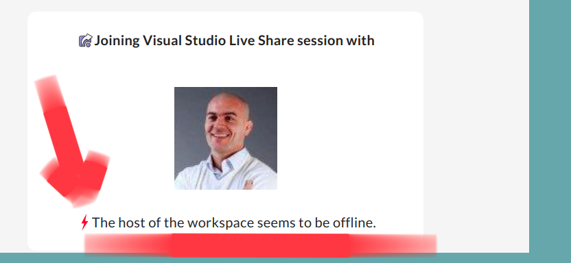
Figure 4: That might happen
Normally though you should see the picture below. Please choose to access the meeting room from your Visual Studio Code:
7.2 Whiteboard space, go to page 7
From now on each lesson will have its drawing space where we can draw stuff on. If we are on lesson 7, just pick page 7 of the whiteboard.
7.3 Big Picture in 2mn
- you draw it live
- I introduce the idea of stream (水流？)
7.4 Write the code you memorized
- You draw it
- we discuss the importance of space (leading space and trailing space)
- we explain statement, simple statement, compound statement (语句)
- we discuss the importance of indentation (缩进 Suō jìn)
7.5 We try the Live Share tool
- We test the terminal (终端)
- We write a hello.py file
- We run the hello.py file